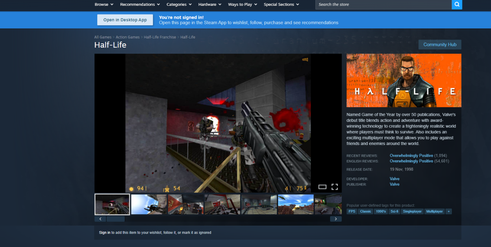
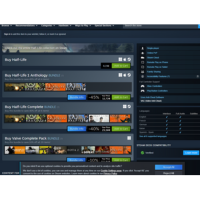
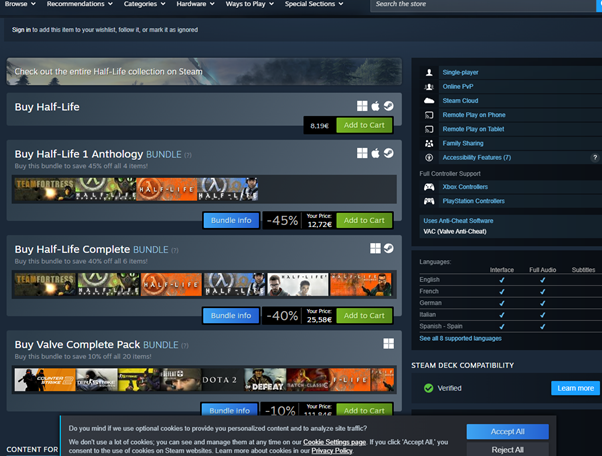

Half-Life

As the base is overrun by alien creatures, the U.S. military arrives—not to rescue survivors, but to erase all evidence, including you. Gordon fights through Black Mesa’s collapsing environments, ultimately traveling to Xen to confront the alien leader Nihilanth.
The story unfolds naturally through scripted in-game events. Soldiers use cover, flank, throw grenades, and coordinate—rare for the time. Levels flow into each other, making the facility feel real and lived-in. The game’s engine powered early versions of Counter-Strike, Team Fortress Classic, Day of Defeat, and more. Developer: Valve Engine: Source Genre: First-person shooter, sci-fi Platforms: PC (Windows originally), later Linux, macOS, Xbox, Xbox 360 (via Orange Box), and others.
You join the Resistance, reunite with Alyx Vance, Dr. Kleiner, Eli Vance, Barney Calhoun, and help humanity fight back. The story is known for: • No cutscenes (everything happens in-game) • Strong character animation and facial expressions • Environmental storytelling Half-Life 2 introduced advanced physics thanks to the Source Engine. This enabled: • Realistic object interactions • Physics-based puzzles • Improvised weapons using the Gravity Gun
Key weapons include: • Crowbar • .357 Magnum • Pulse Rifle (AR2) • Shotgun • Crossbow • Gravity Gun (iconic) Enemies: • Combine soldiers • Headcrabs & zombies • Antlions • Gunships & dropships • Striders Setting The game spans multiple iconic locations: • City 17 • Nova Prospekt • Highway 17 • Ravenholm (“We don’t go to Ravenholm…”) • Citadel Each has a distinct aesthetic and gameplay feel. Why It's Revolutionary Half-Life 2 is still praised for: • Immersive storytelling • Advanced physics (Havok integration) • Great pacing and level design • Memorable characters and world • Modding community (Garry’s Mod, countless mods) It received near-perfect review scores and numerous “Game of the Year” awards.